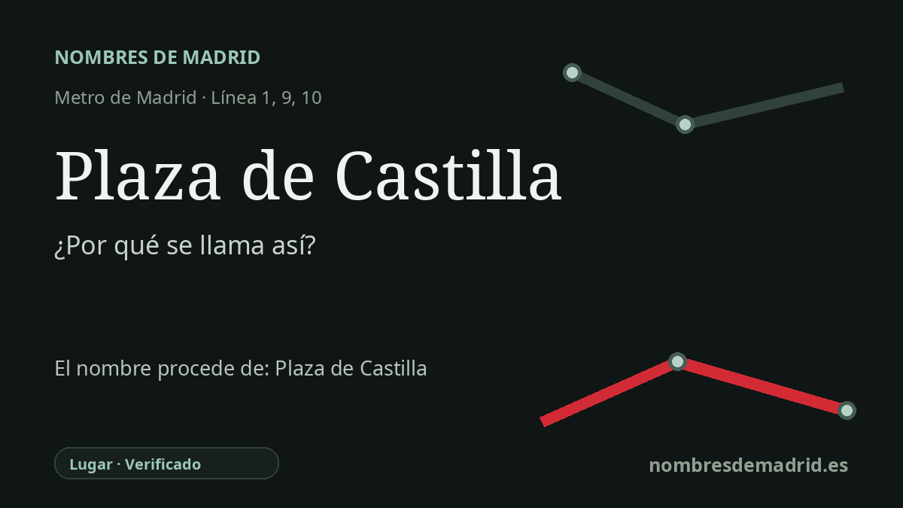

Publicado el · Investigación de Nombres de Madrid · Cómo verificamos cada origen · 9 fuentes consultadas
Respuesta rápida
La estación de Plaza de Castilla toma su nombre de la gran plaza del norte de Madrid bajo la que se sitúa. La plaza se planificó en los años cuarenta donde confluían antiguos caminos hacia el norte con la nueva Avenida del Generalísimo, después de nuevo Paseo de la Castellana.
La historia del nombre
La estación de Plaza de Castilla toma su nombre de la plaza situada justo encima, uno de los grandes espacios de transporte del norte de Madrid. El nombre es, por tanto, ante todo un topónimo urbano: Metro adoptó el nombre de la plaza cuando la línea 1 se prolongó hasta este punto en 1961.
Antes de convertirse en una gran glorieta monumental, este lugar era un cruce de caminos en el borde de la ciudad en crecimiento. La historia publicada por el CRTM describe la actual Plaza de Castilla como la antigua bifurcación entre la carretera de Madrid a Francia, hoy Bravo Murillo, y el camino de Chamartín, con un portazgo junto al kilómetro 6 y posadas que atendían a viajeros y arrieros.
La plaza moderna pertenece a la expansión madrileña de posguerra. A mediados de los años cuarenta se trazó una amplia avenida hacia el norte desde Nuevos Ministerios, entonces llamada Avenida del Generalísimo; en su intersección con la antigua carretera de Francia se proyectó una gran plaza circular conocida como Plaza de Castilla. En esos mismos años Chamartín y otros municipios del norte fueron anexionados a Madrid, de modo que el lugar pasó de borde urbano a hito de la capital.
El Metro incorporó el nombre a la geografía cotidiana de Madrid el 4 de febrero de 1961, cuando la línea 1 llegó a Plaza de Castilla desde Tetuán. Después se añadieron la antigua línea 8, actual línea 10, en 1982, y el tramo norte de la línea 9 en 1983. En superficie y bajo tierra, la plaza se consolidó como puerta de entrada para autobuses procedentes de la A-1 de Burgos y la M-607 de Colmenar, mientras las torres de la Puerta de Europa, el depósito del Canal de Isabel II, los juzgados y el intercambiador fijaron su silueta moderna.
La etimología más segura es, por tanto, directa y urbana: la estación Plaza de Castilla se llama así por la Plaza de Castilla. 'Castilla' remite a Castilla, región histórica y antiguo reino de España, pero no se ha localizado un expediente oficial de denominación que pruebe que la plaza estuviera dedicada específicamente a la Corona de Castilla. En una cartela pública conviene evitar esa precisión si no se consulta antes el expediente municipal de rotulación.